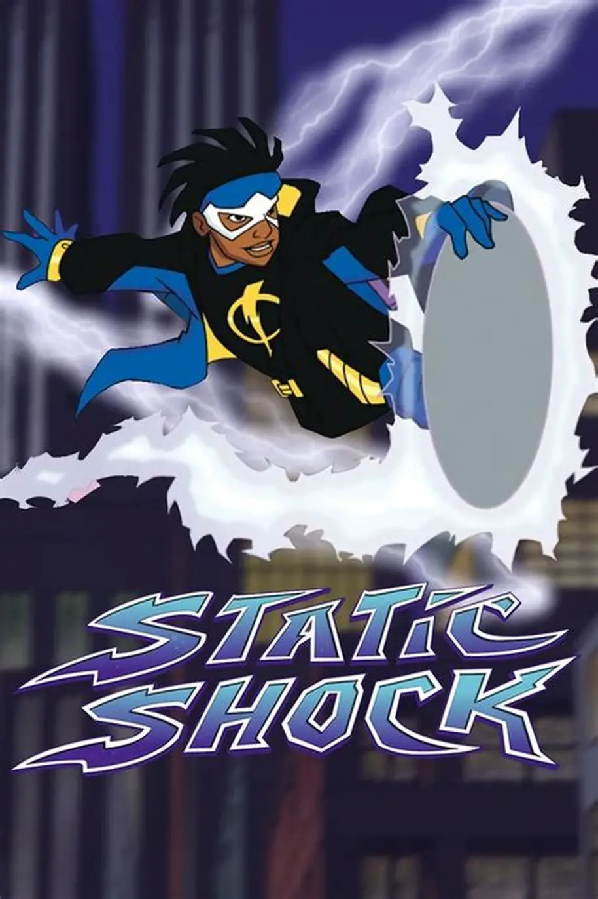

A Noite da Ruptura Química

Em uma emboscada armada entre facções no porto, a polícia municipal interveio utilizando um gás experimental.
O composto original foi identificado como gás lacrimogêneo comum mas análises posteriores comprovaram que se tratava de gás mutagênico modificado Quantum Juice.